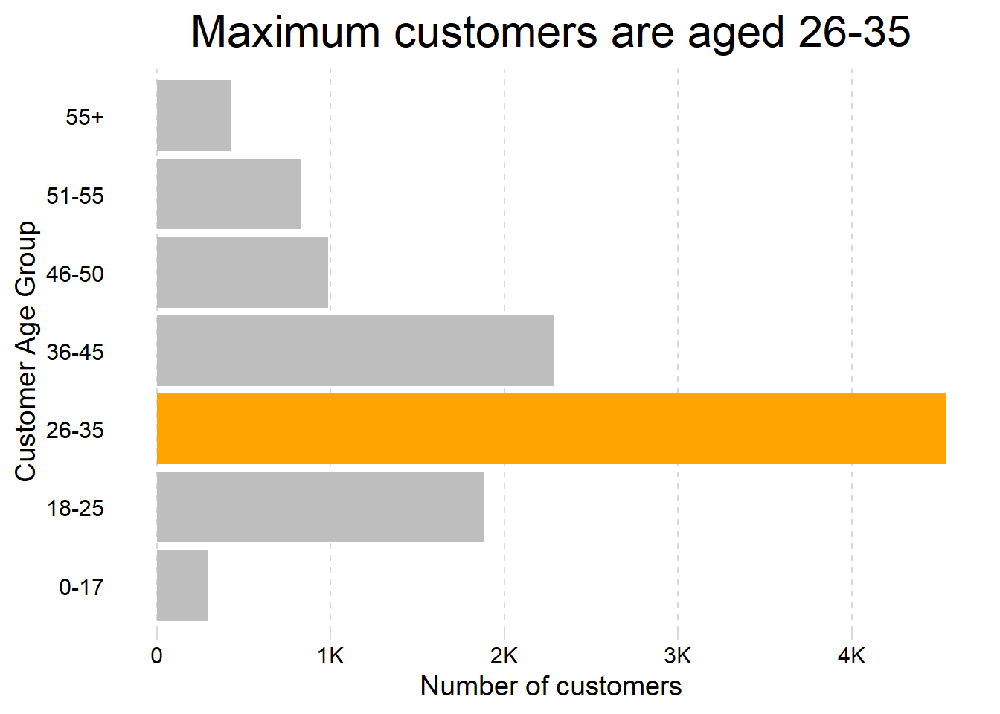

library(tidyverse) # tidy tools data wrangling
library(ggtext) # text into ggplot2
library(sf) # maps and plotting
library(here) # files location and loading
library(showtext) # Using Fonts More Easily in R Graphs
library(ggimage) # Using images in ggplot2
library(rvest) # Get states population data
library(fontawesome) # Social Media icons
library(ggtext) # Markdown Text in ggplot2
library(patchwork) # For combining plotsChapter 9
Arranging Plots
Warning
This chapter does not have any exercises. Instead, we practice arranging plots using the patchwork package (Pedersen 2023) and data on Diwali Sales from India, initially presented as a part of #TidyTuesday.
Libraries and Data
Code
# Loading the data
diwali <- readr::read_csv('https://raw.githubusercontent.com/rfordatascience/tidytuesday/master/data/2023/2023-11-14/diwali_sales_data.csv') |>
janitor::clean_names()
india_map <- st_read(here("data", "india_map", "India_State_Boundary.shp")) |>
mutate(state = str_to_title(State_Name),
.keep = "unused")Reading layer `India_State_Boundary' from data source
`C:\Users\dradi\Documents\Post-Harvard Academics\ggplot2book3e\data\india_map\India_State_Boundary.shp'
using driver `ESRI Shapefile'
Simple feature collection with 37 features and 1 field
Geometry type: MULTIPOLYGON
Dimension: XY
Bounding box: xmin: 7583508 ymin: 753607.8 xmax: 10843390 ymax: 4452638
Projected CRS: WGS 84 / Pseudo-MercatorCode
# Getting population Data from web scraping
state_pop <- rvest::read_html("https://www.indiacensus.net/") |>
html_nodes("table")
state_pop <- state_pop[1] |>
html_table()
state_pop <- state_pop[[1]] |>
janitor::clean_names() |>
select(2, 4) |>
rename(
state = state_name,
population = estimated_population_in_2023
)
state_pop <- state_pop |>
mutate(population = parse_number(population))
# Correct names for some states in india_map
india_map <- india_map |>
mutate(state = case_when(
state == "Tamilnadu" ~ "Tamil Nadu",
state == "Chhattishgarh" ~ "Chhattisgarh",
state == "Telengana" ~ "Telangana",
state == "Jammu And Kashmir" ~ "Jammu & Kashmir",
state == "Andaman & Nicobar" ~ "Andaman & Nicobar Islands",
state == "Daman And Diu And Dadra And Nagar Haveli" ~ "Dadra and Nagar Haveli",
.default = state
))
# Number of customers per capita and Avg. Purchase per customer
df1 <- diwali |>
count(state, sort = TRUE) |>
full_join(state_pop) |>
mutate(cust_m_pop = 1000000 * n / population) |>
arrange(desc(cust_m_pop)) |>
rename(customers = n) |>
select(state, customers, cust_m_pop)
df2 <- diwali |>
group_by(state) |>
summarise(purchase = sum(amount, na.rm = TRUE)) |>
full_join(df1) |>
mutate(purc_cust = purchase / customers) |>
select(state, cust_m_pop, purc_cust) |>
mutate(
state = case_when(
state == "Jammu and Kashmir" ~ "Jammu & Kashmir",
state == "Orissa" ~ "Odisha",
.default = state)
)
mapdf <- df2 |>
full_join(india_map, relationship = "many-to-many") |>
# Simplifying geometry to drastically reduce plotting time
mutate(
geometry = st_simplify(geometry,
preserveTopology = FALSE,
dTolerance = 1000)
)9.1 Laying out plots side by side
Starting by defining some basic parameters, colours and annotations for the final plot
Code
# Load fonts
font_add_google("Pragati Narrow")
font_add_google("Pacifico")
font_add_google("Roboto")
showtext_auto()
body_font <- "Roboto" # Font for plot legends, body etc.
title_font <- "Pacifico" # Font for titles, subtitles
caption_font <- "Pragati Narrow" # Font for the caption
# Define colours
map1_col = c("yellow", # Colours for Chloropleth g1
"red")
map2_col = c("#cdeff7", # Colours for Chloropleth g2
"#1f76f0")
ts = 45 # Text Size
bg_col <- "white" # Background Colour
text_col <- "black" # Colour for the text
text_hil <- "red" # Colour for highlighted text
# Add text to plot
plot_title <- "Diwali Sales: Insights"
plot_subtitle <- "#TidyTuesday. Insights about the Diwali sales data."
sysfonts::font_add(family = "Font Awesome 6 Brands",
regular = here::here("docs", "Font Awesome 6 Brands-Regular-400.otf"))
github <- ""
github_username <- "aditya-dahiya"
xtwitter <- ""
xtwitter_username <- "@adityadahiyaias"
mastodon <- ""
mastodon_username <- "@adityadahiya@mastodon.social"
social_caption <- glue::glue(
"<span style='font-family:\"Font Awesome 6 Brands\";'>{github};</span> <span style='color: #000000'>{github_username} </span>
<span style='font-family:\"Font Awesome 6 Brands\";'>{xtwitter};</span> <span style='color: #000000'>{xtwitter_username}</span>"
)
plot_caption <- paste0("**Data**: kaggle.com<br>", social_caption)The first plot g1 (as shown in Figure 1) shows map of India, with number of customers (per million population) from different states in the Data-Set.
Code
g1 <- mapdf |>
ggplot(aes(fill = cust_m_pop,
geometry = geometry,
label = state)) +
geom_sf() +
geom_sf_text(aes(alpha = !is.na(cust_m_pop)),
size = ts/15) +
coord_sf() +
scale_fill_continuous(low = map1_col[1],
high = map1_col[2],
na.value = bg_col,
trans = "log10") +
scale_alpha_discrete(range = c(0, 1)) +
guides(alpha = "none", fill = "colorbar") +
ggthemes::theme_map() +
labs(fill = "Customer Numbers\n(per mil. pop.)",
subtitle = "Customer numbers (per million population)") +
theme(plot.subtitle = element_text(size = ts/3,
family = body_font,
hjust = 0.5),
legend.text = element_text(size = ts/6,
family = body_font),
legend.title = element_text(size = ts/6,
family = body_font,
vjust = 0.5),
legend.position = "right",
legend.background = element_rect(fill = NULL),
legend.key.width = unit(2, "mm"))
g1The second plot g2 (as shown in Figure 2) shows map of India, with average spending per customer in the Diwali Sales dataset from different states.
Code
g2 <- mapdf |>
ggplot(aes(fill = purc_cust,
geometry = geometry,
label = state)) +
geom_sf() +
geom_sf_text(aes(alpha = !is.na(purc_cust)),
size = ts/15) +
coord_sf() +
scale_fill_continuous(low = map2_col[1],
high = map2_col[2],
na.value = bg_col,
labels = scales::label_comma(prefix = "Rs."),
breaks = c(8000, 10000)) +
scale_alpha_discrete(range = c(0, 1)) +
guides(alpha = "none", fill = "colorbar") +
ggthemes::theme_map() +
labs(fill = "Average Customer\nSpending (Rs.)",
subtitle = "Average customer spending (in Rupees)") +
theme(plot.subtitle = element_text(size = ts/3,
family = body_font,
hjust = 0.5),
legend.text = element_text(size = ts/6,
family = body_font),
legend.title = element_text(size = ts/6,
family = body_font,
vjust = 0.5),
legend.position = "right",
legend.background = element_rect(fill = NULL),
legend.key.width = unit(2, "mm"))
g2Now, we lay the two plots side by side using patchwork:
Code
g1 + g2 +
plot_layout(guides = "collect") &
plot_annotation(
title = "Diwali Sales Data",
caption = "Source: #TidyTuesday, kaggle.com"
) &
theme(
plot.title = element_text(hjust = 0.5,
size = ts/2),
plot.caption = element_text(hjust = 0.5,
size = ts/5)
)Another Figure 4 shows the age distribution of customers in the data-set:
Code
g3 <- diwali |>
count(age_group) |>
mutate(fill_var = age_group == "26-35") |>
ggplot(aes(x = n, y = age_group, fill = fill_var)) +
geom_col() +
labs(subtitle = "Maximum customers are aged 26-35",
y = "Customer Age Group",
x = "Number of customers") +
scale_x_continuous(labels = scales::label_number_si()) +
scale_fill_manual(values = c("grey", "orange")) +
cowplot::theme_minimal_vgrid() +
theme(axis.ticks.y = element_blank(),
panel.grid = element_line(linetype = 2),
axis.line.y = element_blank(),
panel.border = element_blank(),
plot.subtitle = element_text(hjust = 0.5,
size = ts/2),
axis.text = element_text(size = ts/4),
axis.title = element_text(ts/3),
legend.position = "none")
g3
Another Figure 5 shows a heat-map of the products sold category-wise in different states from the data-set:
Code
# Create ordering of groups
st_vec <- diwali |>
count(state, sort = TRUE) |>
pull(state) |>
rev()
pr_vec <- diwali |>
count(product_category, sort = TRUE) |>
pull(product_category)
g4 <- diwali |>
count(state, product_category, wt = orders, sort = TRUE) |>
mutate(
state = fct(state, levels = st_vec),
product_category = fct(product_category, levels = pr_vec)
) |>
ggplot(aes(y = state, x = product_category, fill = n)) +
geom_tile(col = "white") +
geom_text(aes(label = n), size = ts/18) +
scale_fill_gradient(low = "white",
high = "red",
na.value = "white",
trans = "log2",
breaks = c(1, 10, 50, 200, 500)) +
labs(x = NULL, y = NULL,
fill = "Number of products sold",
subtitle = "Certain items are more popular in some states") +
theme_minimal() +
theme(panel.grid = element_blank(),
axis.text.x = element_text(angle = 90,
hjust = 1),
legend.position = "right",
legend.title = element_text(angle = 90,
hjust = 0,
vjust = 1),
axis.text = element_text(size = ts/4),
plot.subtitle = element_text(size = ts/4))
g4Combining the two Figure 4 and Figure 5 using patchwork:
Code
g3 + g4 +
plot_layout(design = "
ABB
ABB") +
plot_annotation(
title = "Insights from Diwali Sales Data",
tag_levels = "I",
tag_prefix = "Figure "
) &
theme(
plot.subtitle = element_text(hjust = 0,
size = ts/4),
plot.title = element_text(hjust = 0.5,
size = ts/1.5),
plot.tag.position = "top",
plot.tag = element_text(face = "italic",
size = ts/5)
)9.2 Arranging plots on top of each other
The Figure 7 shows the use of inset_element() to depict arranging plots on top of one-another using patchwork.
Code
g3inset <-
g3 +
labs(subtitle = NULL) +
theme(
axis.title = element_text(size = ts/5),
axis.text = element_text(size = ts/6),
plot.background = element_rect(fill = "white")
)
g1 +
theme(
legend.position = "bottom",
legend.key.width = unit(10, "mm"),
legend.key.height = unit(2, "mm")
) +
inset_element(
g3inset,
top = 0.3,
bottom = 0,
left = 0.5,
right = 1
)References
Pedersen, Thomas Lin. 2023. Patchwork: The Composer of Plots. https://CRAN.R-project.org/package=patchwork.